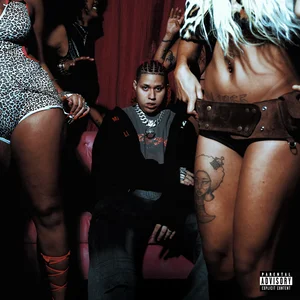
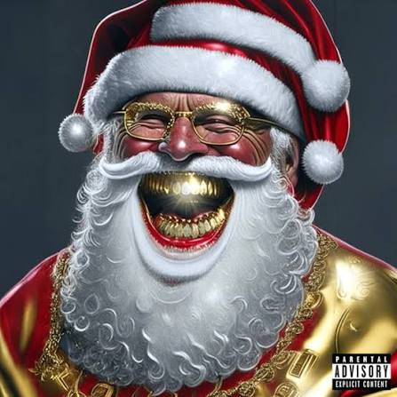

WIU
Vinicius William Sales de Lima (Fortaleza, 16 de fevereiro de 2002), mais conhecido como WIU, é um rapper, cantor, compositor brasileiro, e produtor musical. Ganhou reconhecimento com os singles "Felina", "Horas Iguais" e "Coração de Gelo", além do álbum “Manual de Como Amar Errado”, lançado em 2022.
Biografia
WIU nasceu em Fortaleza, no Ceará. Desde cedo, teve uma forte ligação com o hip-hop; ainda criança, trocou seu videogame pelo software de produção musical FL Studio. Aos 15 anos, começou a lançar suas próprias músicas como artista independente no SoundCloud e no YouTube — plataformas nas quais passou a ganhar reconhecimento. Em 2019, foi convidado por Matuê para integrar a gravadora 30PRAUM. No mesmo ano, WIU lançou seu single de estreia, "Sucrilhos". Em 2021, assinou contrato com a Sony Music, sob licença da 30PRAUM. WIU também participou da produção de "Máquina do Tempo", álbum de estreia de Matuê. Em 2022, lançou seu primeiro álbum, "Manual de Como Amar Errado". WIU recebeu uma certificação da Pro-Música Brasil pelo seu single "Mantém".
Em 2024, WIU lançou seu segundo álbum de estúdio, Vagabundo de Luxo, um álbum trap que incorpora elementos experimentais. A faixa "Rainha da Finesse" combina influências do piseiro e do Jersey club. O álbum também traz elementos do funk carioca e do reggaeton. Nesse mesmo ano, WIU colaborou com Teto na música "Problemas de um Milionário".
Discografia
Álbuns de estúdio
- Manual de Como Amar Errado (2022)
- Vagabundo de Luxo (2024)
Mixtapes
- 808 CLUB (2025)
-

808 CLUB: AFTER (2025)
Extended plays (EPs)
-

Um Pequeno Álbum De Natal (2023)
| Singles | Data de lançamento |
|---|---|
| Sucrilhos | 26 de julho de 2019 |
| Mantém | 9 de outubro de 2019 |
| Pitbull | 2 de novembro de 2021 |
| Lágrimas de Crocodilo | 5 de outubro de 2021 |
| Vampiro | 1 de abril de 2022 |
| Felina | 22 de setembro de 2022 |
| Horas Iguais | 4 de outubro de 2022 |
| Flow Espacial | 30 de janeiro de 2023 |
| Tenho Que Me Decidir | 29 de novembro de 2023 |
| Problemas de um Milionário | 10 de abril de 2024 |
| Rainha da Finesse | 3 de julho de 2024 |
| Balanço de Rede | 12 de dezembro de 2024 |
| ISSO AQUI É BRASIL | 19 de janeiro de 2026 |
Prêmios e indicações
| Ano | Categoria | Indicação | Prêmio | Resultado |
|---|---|---|---|---|
| 2022 | Hino do Ano | "Vampiro" (Matuê, Teto e WIU) | MTV Millennial Awards Brasil | Indicado |
| Feat. Nacional | "Vampiro" (Matuê, Teto e WIU) | MTV Millennial Awards Brasil | Indicado | |
| Prêmio Multishow de Música Brasileira | "Vampiro" (Matuê, Teto e WIU) | Prêmio Multishow de Música Brasileira Voto Popular: Música do Ano | Indicado |